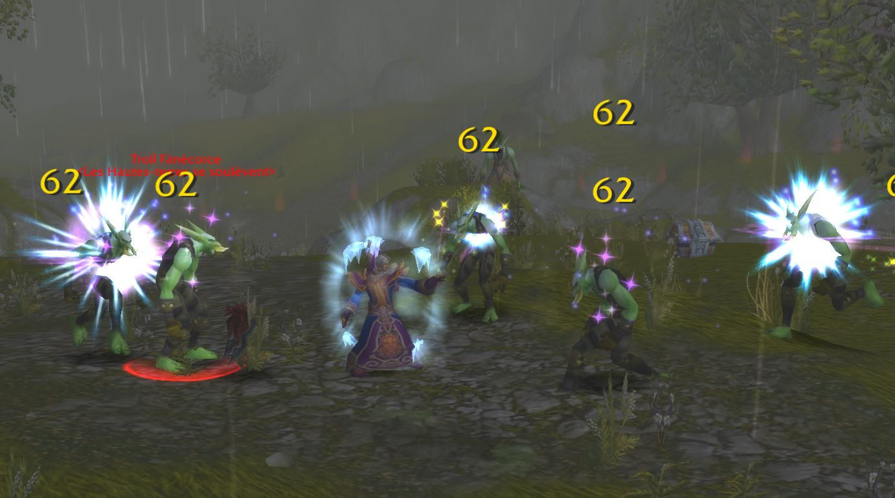

News › Statistiques de la bêta
Bêta fermée : près de 9 millions de personnages créés
30 octobre 2026
Avant la sortie, Blizzard a partagé quelques statistiques amusantes de la bêta fermée de WoW Forever. Et visiblement, les testeurs se sont bien amusés… surtout à mourir.

Les chiffres
| Personnages créés | 8 862 354 |
| Éolides créés | 1 889 084 |
| Paladins morts-vivants créés | 612 096 |
| Victimes en JcJ | 9 959 014 |
| Duels | 1 248 125 |
| Morts par chute | 1 157 204 |
Ce qu'on en retient
- Les Éolides ont eu un vrai succès : plus d'un personnage sur cinq créé pendant la bêta.
- Le paladin mort-vivant, l'une des nouvelles combinaisons de Forever, a été testé plus de 600 000 fois.
- Presque 10 millions de victimes en JcJ : le JcJ sauvage promet. Le coin le plus disputé ? Les Contreforts de Hautebrande, évidemment.
- Plus d'un million de morts par chute : pense au parachute.
Les records
- Donjon le plus meurtrier : la Salle des Thanes, l'un des nouveaux donjons.
- Créature la plus meurtrière : le mineur kobold. « Vous ne prendrez pas la bougie ! »
Source : Blizzard, relayé par JudgeHype ↗